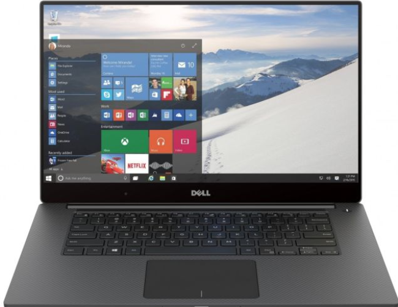

Dell
La tercera marca de computadoras más vendida en el mundo es Dell, empresa fundada en Estados Unidos en 1983 por Michael Dell, quien arrancó su negocio de forma disruptiva al vender sus computadoras directamente a los clientes a través de teléfono e Internet, lo que le ahorró intermediarios y contribuyó a su éxito. Las computadoras Dell están destinadas a un uso en el hogar y en el trabajo. Sus productos van desde laptops hasta servidores, así como accesorios, software e impresoras. Las computadoras Dell compradas desde su sitio web ofrecen buenos ahorros para los consumidores en comparación a los equipos adquiridos en tiendas físicas, mientras que la calidad de sus productos también es parte de sus grandes ventas.
Comuníquese con nosotros para que obtenga una mejor informacion sobre las marcas de computadoras en Mundi-Compu.